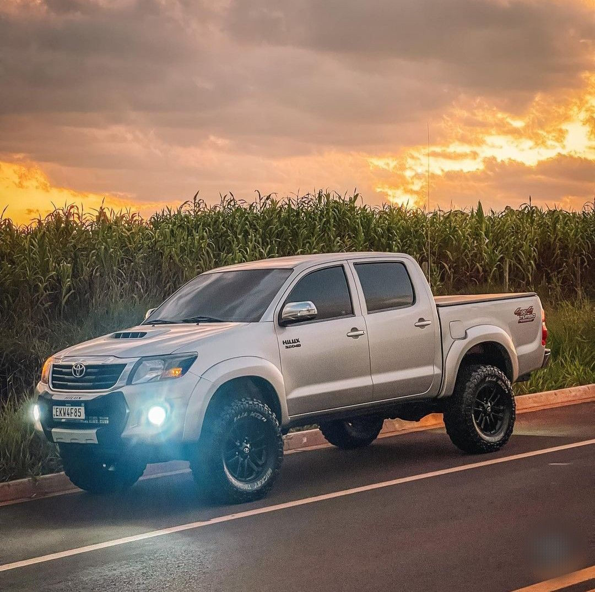

Hilux 2011-2015
-
Motor: 3.0L 16V D-4D Turbo Diesel
-
Potência: 171 cv a 3.600 rpm
-
Torque: 36,7 kgfm entre 1.400 e 3.200 rpm (nas versões automáticas).
-
Transmissão: Automática de 5 velocidades (introduzida no modelo 2012) ou Manual de 5 velocidades.
-
Tração: 4x4 com alavanca física seletora e reduzida.